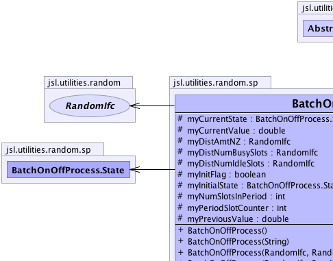
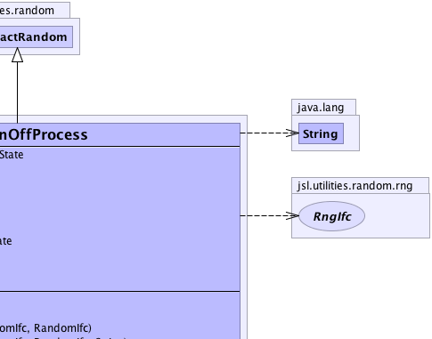
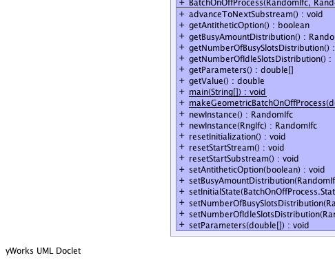
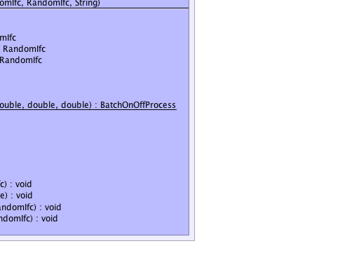

jsl.utilities.random.AbstractRandom
jsl.utilities.random.sp.BatchOnOffProcess
jsl.utilities.random.AbstractRandom
jsl.utilities.random.sp.BatchOnOffProcess
|
||||||||||
| PREV CLASS NEXT CLASS | FRAMES NO FRAMES | |||||||||
| SUMMARY: NESTED | FIELD | CONSTR | METHOD | DETAIL: FIELD | CONSTR | METHOD | |||||||||
java.lang.Object
public class BatchOnOffProcess
|  |  |
|  |  |
| Nested Class Summary | |
|---|---|
static class |
BatchOnOffProcess.State
BUSY means that the process can be non-zero for a slot IDLE means that the process is zero for a slot |
| Nested classes/interfaces inherited from class jsl.utilities.random.AbstractRandom |
|---|
AbstractRandom.RandomControls |
| Field Summary | |
|---|---|
protected BatchOnOffProcess.State |
myCurrentState
The default starting state is the idle state |
protected double |
myCurrentValue
|
protected RandomIfc |
myDistAmtNZ
Governs the amount returned when a slot is busy |
protected RandomIfc |
myDistNumBusySlots
Governs the number of busy slots in a row, when the process goes busy |
protected RandomIfc |
myDistNumIdleSlots
Governs the number of idle slots in a row, when the process goes idle |
protected boolean |
myInitFlag
Indicates whether the process has been initialized using the initial state |
protected BatchOnOffProcess.State |
myInitialState
Specifies the initial state, assumed idle |
protected int |
myNumSlotsInPeriod
The number of slots for the current period |
protected int |
myPeriodSlotCounter
Counts the number of slots in the period up to the required number for the period |
protected double |
myPreviousValue
The value returned previous to the current value |
| Fields inherited from class jsl.utilities.random.AbstractRandom |
|---|
myId, myName |
| Constructor Summary | |
|---|---|
BatchOnOffProcess()
Creates a default BatchOnOffProcess with: number of busy slots = Constant.ONE number of idle slots = Constant.ONE busy amount = Constant.ONE |
|
BatchOnOffProcess(RandomIfc numBusySlots,
RandomIfc numIdleSlots,
RandomIfc busyAmt)
|
|
BatchOnOffProcess(RandomIfc numBusySlots,
RandomIfc numIdleSlots,
RandomIfc busyAmt,
java.lang.String name)
|
|
BatchOnOffProcess(java.lang.String name)
Creates a default BatchOnOffProcess with: number of busy slots = Constant.ONE number of idle slots = Constant.ONE busy amount = Constant.ONE |
|
| Method Summary | |
|---|---|
void |
advanceToNextSubstream()
Positions the RNG at the beginning of its next substream |
boolean |
getAntitheticOption()
|
RandomIfc |
getBusyAmountDistribution()
Governs the amount for a busy slot |
RandomIfc |
getNumberOfBusySlotsDistribution()
Gets the RandomIfc governing the number of busy slots in a busy period |
RandomIfc |
getNumberOfIdleSlotsDistribution()
Gets the RandomIfc governing the number of idle slots in a idle period |
double[] |
getParameters()
The parameters are ordered in the array by: 1) amount distribution parameters 2) Number of busy slots distribution parameters 3) Number of idle slots distribution parameters 4) Initial state 1.0 means busy, 0.0 means idle |
double |
getValue()
This method simply returns the value. |
static void |
main(java.lang.String[] args)
|
static BatchOnOffProcess |
makeGeometricBatchOnOffProcess(double meanNumIdleSlots,
double meanNumBusySlots,
double meanNZAmt)
|
RandomIfc |
newInstance()
Returns a new instance of the random source with the same parameters but an independent underlying random number source |
RandomIfc |
newInstance(RngIfc rng)
Returns a new instance of the random source with the same parameters but using the supplied random number stream |
void |
resetInitialization()
Causes the process to think that it has not been initialized. |
void |
resetStartStream()
The resetStartStream method will position the RNG at the beginning of its stream. |
void |
resetStartSubstream()
Resets the position of the RNG at the start of the current substream |
void |
setAntitheticOption(boolean flag)
Tells the stream to start producing antithetic variates |
void |
setBusyAmountDistribution(RandomIfc busyAmt)
Sets the amount for a busy slot |
void |
setInitialState(BatchOnOffProcess.State state)
Sets the initial state to the provided state Does not change values from getValue() unless resetInitialization() is used |
void |
setNumberOfBusySlotsDistribution(RandomIfc numBusySlots)
Governs the number of busy slots in a busy period |
void |
setNumberOfIdleSlotsDistribution(RandomIfc numIdleSlots)
Governs the number of busy slots in a idle period |
void |
setParameters(double[] parameters)
The parameters should be ordered in the array by: 1) amount distribution parameters 2) Number of busy slots distribution parameters 3) Number of idle slots distribution parameters 4) Initial state 1.0 means busy, 0.0 means idle |
| Methods inherited from class jsl.utilities.random.AbstractRandom |
|---|
getId, getName, getSample, getSample, makeControls, setControls, setId, setName |
| Methods inherited from class java.lang.Object |
|---|
clone, equals, finalize, getClass, hashCode, notify, notifyAll, toString, wait, wait, wait |
| Field Detail |
|---|
protected RandomIfc myDistNumBusySlots
protected RandomIfc myDistNumIdleSlots
protected RandomIfc myDistAmtNZ
protected BatchOnOffProcess.State myCurrentState
protected int myNumSlotsInPeriod
protected int myPeriodSlotCounter
protected double myPreviousValue
protected BatchOnOffProcess.State myInitialState
protected boolean myInitFlag
protected double myCurrentValue
| Constructor Detail |
|---|
public BatchOnOffProcess()
public BatchOnOffProcess(java.lang.String name)
public BatchOnOffProcess(RandomIfc numBusySlots,
RandomIfc numIdleSlots,
RandomIfc busyAmt)
numBusySlots - numIdleSlots - busyAmt -
public BatchOnOffProcess(RandomIfc numBusySlots,
RandomIfc numIdleSlots,
RandomIfc busyAmt,
java.lang.String name)
numBusySlots - numIdleSlots - busyAmt - | Method Detail |
|---|
public RandomIfc getNumberOfBusySlotsDistribution()
public void setNumberOfBusySlotsDistribution(RandomIfc numBusySlots)
numBusySlots - the numBusySlots to set, must not be nullpublic RandomIfc getNumberOfIdleSlotsDistribution()
public void setNumberOfIdleSlotsDistribution(RandomIfc numIdleSlots)
numIdleSlots - the numIdleSlots to set, must not be nullpublic RandomIfc getBusyAmountDistribution()
public void setBusyAmountDistribution(RandomIfc busyAmt)
busyAmt - the amount for a busy slot, must not be nullpublic RandomIfc newInstance()
RandomIfc
public RandomIfc newInstance(RngIfc rng)
RandomIfc
public double[] getParameters()
public void setParameters(double[] parameters)
the - parameters as an arraypublic void setInitialState(BatchOnOffProcess.State state)
state - public void resetInitialization()
public double getValue()
GetValueIfc
public void advanceToNextSubstream()
RandomStreamIfc
public void resetStartStream()
RandomStreamIfc
public void resetStartSubstream()
RandomStreamIfc
public void setAntitheticOption(boolean flag)
RandomStreamIfc
flag - true means that it produces antithetic variates.public boolean getAntitheticOption()
public static BatchOnOffProcess makeGeometricBatchOnOffProcess(double meanNumIdleSlots,
double meanNumBusySlots,
double meanNZAmt)
public static void main(java.lang.String[] args)
args -
|
||||||||||
| PREV CLASS NEXT CLASS | FRAMES NO FRAMES | |||||||||
| SUMMARY: NESTED | FIELD | CONSTR | METHOD | DETAIL: FIELD | CONSTR | METHOD | |||||||||